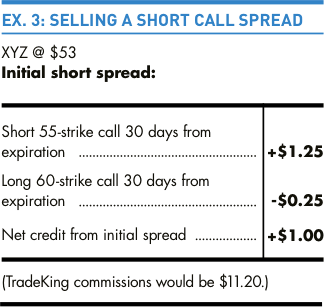
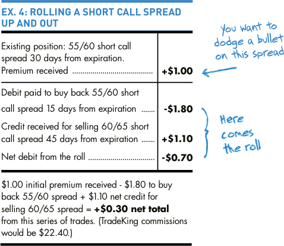

Rolling a Short Call Spread
Rolling a spread works much the same way as rolling an individual option. You will most likely be moving out in time and moving the strike prices either up or down. The difference is you will be trading four different options in one trade instead of two. In other words, you’re closing two existing options and opening two new ones.
Now imagine you’re bearish on stock XYZ, and it’s trading at $53. You might decide to sell a 55/60 short call spread 30 days from expiration, and receive a credit of $1. (You can see how we arrived at the $1 credit in Ex.3, and from this point forward, we’ll just focus on the net credit or debit to trade a spread.)
But what if your forecast was wrong, the stock makes a bullish short-term move to $55.50 with 15 days remaining until expiration, and the net cost to buy the spread back is now $1.80? If you’re still convinced your forecast is correct and the stock price won’t continue to rise, you can roll the spread’s strikes up in price and roll expiration out in time.
To do so, you would pay the $1.80 to buy back the 55/60 short call spread and simultaneously sell another short call spread with a short strike of 60, a long strike of 65 and 45 days until expiration. For the 45-day 60/65 strike short call spread you receive a credit of $1.10.
Now instead of being down $0.80 on the trade, if the stock is below $60 at the new expiration date, you’ll be up a total of $0.30 ($1.00 net credit to open the 55/60 spread - $1.80 net debit to close the 55/60 spread + $1.10 net credit to open the 60/65 spread = $0.30).
At this point, you really have to hope your forecast is correct and the stock stays below $60. You’ll only be up $0.30 on the trade — and that’s if everything works out as planned. So if the stock continues to make a bullish move beyond the 60 short strike, things could go south in a hurry.
We can’t emphasize this enough: when you roll any option, you may be setting yourself up to compound your losses. There’s no shame in ditching your position instead of rolling if you’re not extremely confident your forecast is correct.
Options Guy's Tips
 The above concepts apply to any type of two-legged trade, not just short spreads. You can also roll straddles, combinations, front spreads and back spreads. You can even roll one-half of four-legged trades that consist of two spreads, like iron condors and double diagonals.
The above concepts apply to any type of two-legged trade, not just short spreads. You can also roll straddles, combinations, front spreads and back spreads. You can even roll one-half of four-legged trades that consist of two spreads, like iron condors and double diagonals.
Rolling spreads is something iron condor and double diagonal traders absolutely must understand, since both strategies consist of two short spreads (one with calls and one with puts).
When you roll a spread, make sure you pull it off all in one trade to help protect against stock movement between the time you close one spread and open another.
Today's Trader Network
|
All-Star Trade Report |
Options Guy Blog |
Videos, webinars and more |